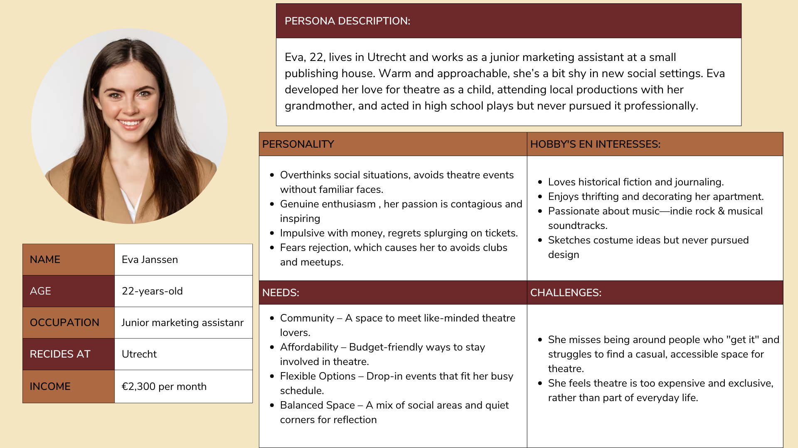
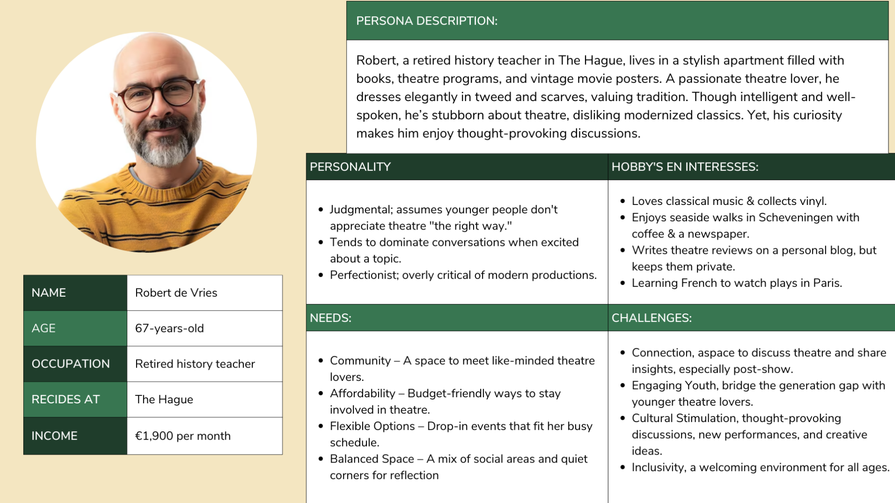
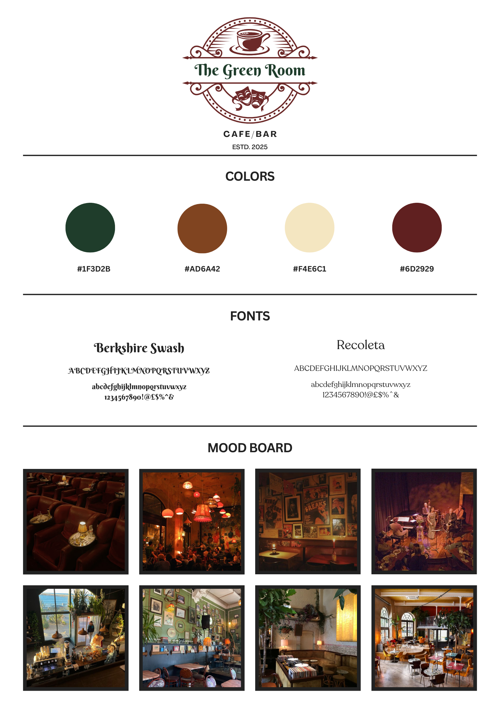

Corporate Information
General Information
This branded website is publicly available at https://tessebregt.github.io/TheGreenRoom_Prj4/
This website was created by:
- Kim Elst (232721)
- Rowan Braning (230042)
- Tess Ebregt (231563)
- Elise Frans (233632)
Content
Vision:
To build an inspiring environment where ideas grow, relationships deepen, and stories find their voices. A place where creativity has no limits and every moment sparks new possibilities.
Values:
Everybody Deserves to Belong:
We believe that every person, regardless of background, experience, or identity, deserves a place to call their own, a space where they feel seen, valued, and understood. Whether you're a lifelong theater lover or just discovering the magic of the stage, here, you belong. This is a place where creativity knows no boundaries, where voices from all walks of life can find harmony, and where every individual is welcomed with open arms. We’re making the arts accessible for everyone.
Lasting Moments:
We believe that some experiences are meant to be felt, not just seen. It's not just about watching a performance or enjoying a drink, it's about creating moments that linger, stories that stay with you long after the curtain falls. Whether it's a spontaneous improvisation show, a heartwarming open mic night, or an immersive theater experience, we aim to create connections that last.
Fueling Stories, Igniting Voices:
We believe in the power of stories to transform and connect. From a whispered line in a script to the roar of applause at the end of a performance, every voice has the potential to spark something incredible. We're here to fuel that spark, whether it's over a quiet cup of coffee, a casual script reading, or a night of live entertainment.
Creativity Knows No Boundaries:
We believe creativity is not confined by walls or rules, it’s a force that knows no boundaries. It flows freely, uninhibited, and we’re here to support that freedom at every turn. Whether you’re an actor stepping into character, a writer breathing life into a new script, or someone enjoying the magic of live performance, we’ve created a space where creativity is celebrated, encouraged, and unleashed.
Personas:
Persona 1
Persona 2
Brand Name:
We came up with the brand name The Green Room, which refers to the backstage lounge where actors wait before performing.
Visual Identity:
General style:
Logo:
The Green Room's logo features an elegant, vintage-inspired symbol with a coffee cup at the center, symbolizing the café atmosphere during the day. Below it, theatrical masks are highlighting the theater theme and live entertainment aspect of the brand. This gives the logo a classic, refined look and reflects the artistic and creative energy of the space. The design aligns with our mission of creating a warm, inspiring space where communities can gather.
Color Palette:
We spent a long time searching for the perfect balance, colors that capture the warmth and creativity of the café during the day, as well as the intimate and theatrical ambiance of the bar at night. Together, these colors create a welcoming environment for theater lovers to gather. The mix of deep greens and reds reflect the traditional aesthetic of historic theatres, while the browns and creams provide a welcoming touch.
As the primary color we chose red.
Typography:
We chose a combination of Berkshire Swash and Recoleta for our brand because together they capture the essence of theatrical elegance and creative warmth. Berkshire Swash brings a stylish, vintage flair reminiscent of classic theatre signs and playbills, with just the right mix of decorative charm and readability. Recoleta complements this with its soft, rounded serifs and modern-retro feel, adding a sense of approachability and boldness. This pairing reflects our brand’s identity sophisticated yet inviting, creative yet grounded in tradition.
Iconography:
In our branding, we’ll include small theater-inspired details like spotlights, vintage tickets, and decorative script accents. The graphics will be stylish but not too complicated, blending artistic with a clean look.
Photography Style:
Our photography captures the energy of the theater world. We focus on candid, in-the-moment shots that showcase real interactions. Low contrast and warm tones will capture the nostalgic, inviting feel of the space. A mix of cozy café shots during the day and moody, atmospheric event photos at night will visually express the transformation of the space.
Website and App Design:
Layouts and Composition:
The website and digital materials have a clear, structured layout while adding playful, theatrical details. This design keeps things organized while still feeling creative and immersive. The text is styled for easy reading, with elegant headers and simple, modern body text for clarity. The layout is simple but engaging, making it easy to explore while keeping things interactive. At the top, our slogan invites visitors: “Step inside, take a seat, and let the story unfold.” The menu adds to the theme. Fun features like an event schedule, social media updates, and easy booking make the site more interactive. It also works smoothly on both computers and phones, so users can browse from anywhere. Flyers, posters, and menus match the vintage theater theme, using decorative designs, classic serif fonts, and rich, deep colors to strengthen the brand’s identity.
Tone of Voice:
Our language is warm, informal and inviting, we want visitors to feel like they’re talking to a fellow theater lover.
We want to use playful theatrical references to keep messaging fun and immersive (e.g., “Take center stage with our signature cocktails” or “Join us for an encore-worthy performance”). Storytelling is key. Whether describing an event or our menu, we use narrative elements to create an emotional connection with our audience. Accessibility and inclusivity are central, our messaging ensures that both seasoned theatergoers and newcomers feel equally welcome.
Copywriting:
This tone of voice was crafted to reflect the heart of the space: creative, welcoming, and deeply connected to the world of theater. By using warm and informal language, we lower barriers and create a sense of familiarity, making the brand feel more like a passionate friend than a formal institution. Playful theatrical references aren’t just for flair they immerse the audience in a shared language that sparks joy and strengthens identity. Storytelling is used to build emotional resonance, transforming simple messages into memorable moments. And because the space is built on values of inclusivity and openness, the language ensures everyone whether a lifelong theater fan or a first-time visitor feels seen, invited, and valued.
Supporting Visuals:
The brand’s visual identity is carefully crafted to create a cohesive and emotionally resonant experience that reflects its values and connects with its audience. The color palette, featuring deep burgundy, soft beige, and warm neutrals, brings to mind the elegance of classic theater settings and creates a welcoming, comfortable atmosphere. Typography plays a central role in expressing the brand’s character. Headings use Berkshire Swash, a decorative serif font that adds theatrical flair and personality, while body text is set in Recoleta, a rounded and friendly serif that offers clarity and warmth. These fonts complement each other to create a visual rhythm that is expressive yet easy to read. Across the website, imagery and design elements are consistently chosen to support this tone, using lighting, textures, and compositions that evoke emotion and storytelling. Every visual decision is made with the target audience in mind, ensuring that the overall mood remains inviting, artistic, and true to the brand’s identity.
Logo Design Process:
The process of creating the logo for The Green Room was centered around capturing the venue’s essence and connecting with its audience. We used a coffee cup above the text to symbolize the café atmosphere and a theater mask below to represent the venue’s creative, performance-driven identity. The typography, Berkshire Swash, was chosen for its vintage, elegant flair, evoking classic theater signage and cozy coffee shops. The color palette, featuring deep green, beige, and burgundy, was selected to create a sophisticated, warm feel that blends nature with vintage charm. The layout ensures a balanced design, with the coffee cup and theater mask working together to create a dynamic yet cohesive logo. This final design embodies the brand’s values of creativity, community, and inclusivity, inviting visitors into a space where theater, creativity, and coffee harmonize.
Production
Download Visual Identity PDF:
If you would like to explore our full Visual Identity guide, which includes all detailed design choices, colors, fonts, and more, you can download the PDF document below:
Download Visual Identity PDFDownload Credits PDF:
If you'd like to view the credits for this project, you can download the PDF document below:
Download Credits PDFDownload Usability Testing Report PDF:
If you'd like to view the full usability testing report, you can download the PDF document below:
Download Usability Testing Report PDFMarketing
At The Green Room, we believe every story deserves a stage. We’re more than just a café or a bar, we are a creative hub built for theatre lovers, artists, and dreamers. Our campaign reflects this identity by embracing freedom of expression, inclusivity, and storytelling at its core. It’s about building a community, both online and in-person, where like-minded individuals can come together to share ideas, perform, and feel truly seen.
Target Audience:
Our target audience includes students aged 16–25 and theatre professionals and enthusiasts aged 25–50+, primarily based in cultural hubs like Amsterdam, Rotterdam, and Utrecht. They are passionate about the arts, spend 4–8 hours a day on screens, and are highly active on platforms like Instagram and TikTok (Gitnux, 2023). The peak activity hours are evenings (6–10 PM) and late nights (10 PM–4 AM) (Shriber, 2024). They’re not just looking to watch performances, they want to participate, express themselves, and be part of a community.
Platform Strategy:
On Instagram and TikTok for younger audiences, where short-form visual storytelling thrives (Wood, 2021; Macready, 2025). These platforms let us share behind-the-scenes content, artist spotlights, interactive stories, and creative event highlights, which the audience prefers as content. The platforms dominate Gen Z’s media consumption and foster creative expression. For the older segment, Facebook remains a vital platform for sharing event info, fostering community discussions, and driving engagement (Marketing to Senior Audiences on Facebook, n.d.).
Email newsletters help us stay connected with loyal followers by offering personalized updates, discount codes, and exclusive content. Our website acts as the central hub, where visitors can buy tickets, watch livestreams, read interviews, and explore upcoming events.
Campaign Message and Tone:
To connect with our audience, we designed a campaign that feels personal, immersive, and artistically driven. Our audience values experiences over products, and by focusing on events and storytelling, we tap into their desire for meaningful connection (vorecol.com; desygner.com). Our messaging and visuals' aesthetics create the sense of being backstage, genuine, and full of possibilities. We've created an environment that seems genuine and friendly by maintaining a similar tone and branding throughout all of our platforms. The message remains the same whether someone finds us on Instagram, reads about us in an email, or enters the café: here is a place for community, creativity, and connection.
Community and Engagement:
The Green Room is designed to foster a community atmosphere. Our audiences are not just looking to watch performances; they want to participate, express themselves, and be part of a creative community. This is why our campaign focuses heavily on engagement whether it's through social media interaction, live workshops, or community events, we encourage our audience to connect, collaborate, and share their passion for the arts.
Key Insights:
By focusing on storytelling and creative expression, we aim to connect with both our younger and older audiences. The use of Instagram and TikTok for younger audiences, and Facebook for older segments, allows us to meet them where they already are. By offering personalized and immersive experiences through email and our website, we can deepen the connection with our community, making The Green Room a central hub for theatre lovers and creatives alike.
Content Calender:

Objectives:
Reach: The Green Room aims to build a strong online presence. Our primary goal is to reach and expose at least 200 unique users across Instagram, TikTok, and Facebook through visually engaging, high-quality content.
Justification: We aim to have a minimum of 200 people visit our website in the first month of running business in other words, our goal is to have 200 visits by the end of April. Based on a survey conducted in 2023, restaurant/bar/café customers search for such options on Google rather than other social media platforms (Cherylclaypoole, 2025). Our social media strategy will support this by increasing visibility and brand awareness.
Affect: The Green Room aims to create a welcoming and inspiring space where theatre lovers feel connected, understood, and free to express their creativity. By fostering a sense of belonging, we strive to immerse our audience in a passionate community that celebrates storytelling and the magic of theatre.
Justification: Building emotional resonance is essential for long-term loyalty. By using inclusive and relatable messaging in our content, such as behind-the-scenes footage, community spotlights, and interactive stories we’ll build a brand that feels human and inviting, encouraging repeat engagement and word-of-mouth promotion.
Response: We aim to engage our audience on social media while driving at least 200 website visits by April. Our content strategy includes clear calls-to-action that invite users to learn more, visit the site, or attend an event. Social media goals include 20–50 views per post, 50–100 new followers, 100+ likes, and 30+ saves.
Justification: Given that customers primarily search for restaurants and cafés on Google, driving traffic to our website is key. Social media posts will link to the site, creating a seamless funnel. We expect Instagram and TikTok to perform best with younger users, while Facebook will help connect with an older demographic (Wood, 2021; Macready, 2025).
Reflections and Future Planning:
Learning Points: Throughout the campaign for The Green Room, we learned valuable lessons regarding content engagement and platform performance, as outlined in our Communication and Media Plan. In Week 1, we introduced our brand by showcasing our café and bar concept through reels, photos, and stories. Reels attracted the most views, while posts and stories gained more interactions. However, we overlooked Facebook, which led to low engagement. Week 2 showed increased reach on Instagram and TikTok, with TikTok proving to be particularly effective, surpassing our expectations. In Week 3, engagement dropped due to fewer posts and no activity on Facebook. Week 4 further highlighted the importance of consistency, as Facebook remained inactive and Instagram’s engagement was lower than anticipated. On the positive side, TikTok continued to outperform, with just one post bringing in impressive reach and engagement. Reflecting on the campaign, we learned that video content, particularly on TikTok, is crucial for engagement. If we could redo the project, we would prioritize consistency across all platforms, especially Facebook, and ensure timely scheduling. This thorough reflection demonstrates what worked, what didn’t, and how we would adjust our approach moving forward.
Future Planning:
Reflecting on the campaign for The Green Room, it became clear that our strongest content type was video, especially reels on Instagram and TikTok. These formats consistently delivered the highest engagement rates and helped communicate the brand’s atmosphere and unique concept effectively. However, we missed the opportunity to leverage Facebook, which resulted in an untapped audience segment and lower overall campaign consistency.
If the campaign were to continue, we would focus on expanding the content strategy to include new formats and storytelling approaches. For example, we would introduce:
- Behind-the-scenes footage of event preparations and café life
- Short artist interviews to highlight the performers’ personalities and stories
- User-generated content to build a stronger sense of community and relatability
- Live streams and countdown teasers for upcoming events to create real-time excitement
These additions would bring more authenticity and diversity to the brand’s voice, aligning with literature that emphasizes the value of authenticity and storytelling in fostering long-term audience engagement.
Another key insight from both experience and academic sources is the importance of platform-specific strategies and consistency. We would implement a structured content calendar that includes weekly content themes tailored for each platform. For instance, educational posts or quotes on Facebook, quick interactive stories on Instagram, and raw, entertaining behind-the-scenes content on TikTok. This structure would ensure consistency and maintain audience interest across platforms.
In terms of process, one of the most critical things we would change is how we manage cross-platform engagement. During this project, Facebook was often neglected, and our posting schedule lacked balance. Moving forward, we would:
- Ensure equal attention to all platforms by assigning clear responsibilities within the team
- Use social media management tools (like Buffer or Hootsuite) to pre-schedule posts and maintain regular activity
- Analyze performance data weekly to adjust the strategy in real time, experimenting with different post types, captions, and timing
Additionally, community engagement would become a bigger focus. This means more proactive interaction with followers: replying to comments and DMs, resharing audience stories, and encouraging user involvement through polls, QandA's, or creative challenges. This approach aligns with literature on relationship marketing, which shows that active dialogue increases trust, brand loyalty, and emotional investment.
In summary, based on what worked and what didn’t, the future campaign would evolve to:
- Diversify and deepen the content strategy with personal, behind-the-scenes storytelling
- Maintain a consistent presence across all platforms, especially Facebook
- Strengthen community engagement and responsiveness
- Base decisions on clear data insights and ongoing analysis
- Establish platform-specific themes and strategic posting schedules
These changes would ensure a stronger, more sustainable, and more engaging marketing presence for The Green Room, grounded in both creative intuition and academic research.
Professionalism:
Social Media Campaign Overview
All social media content for The Green Room is carefully designed to reflect the brand’s creative, cozy, and inclusive identity. Each platform is tailored to its audience, with a cohesive tone and high-quality visuals that support the campaign’s goals. The following breakdown highlights how Instagram, TikTok, and Facebook were used, along with real posts, account views, and insights.
Instagram is used to visually communicate The Green Room’s cozy, creative atmosphere and community-driven vibe. With a focus on students and young creatives (16–25), the content includes Reels, carousels, and Stories that highlight performances, workshops, and behind-the-scenes moments. This audience values authenticity and aesthetics, so the visuals are carefully styled to match the brand’s warm and artistic identity. Story polls and interactive posts encourage participation, while Reels extend reach through short-form storytelling. Instagram builds a consistent brand presence and creates a sense of belonging for followers.


TikTok
TikTok targets a younger, trend-focused audience who are highly engaged with relatable and entertaining content. Short videos such as day-in-the-life clips, performer spotlights, or viral trends are adapted to reflect The Green Room’s values of creativity and self-expression. The tone is informal and fun, aligning with how Gen Z interacts on the platform. This channel is ideal for reaching new visitors and showcasing the personality behind the space. TikTok helps build awareness and encourages spontaneous visits through compelling, fast-paced content.


Facebook caters more to theatre professionals, older creatives, and local residents aged 25–50+. Content here includes detailed event announcements, workshop promotions, and storytelling posts that emphasize the space’s mission and upcoming programming. This audience appreciates information, consistency, and community updates, so content is longer-form and thoughtfully written. Facebook Events are used to drive attendance, while posts create a direct connection with the local arts community. The tone remains inviting and professional, preserving The Green Room’s inclusive and accessible brand identity.


For an extended version:
Management
Lean Canvas:

Problem:
- High Cost of theatre: Traditional theatre is too expensive, making it less accessible for students.
- Lack of young audience engagement: Theatre is often seen as outdated or unappealing to younger audiences.
- Limited Exposure for Upcoming Artists: New artists struggle to find performance opportunities.
- Low Theatre Participation in Communities: Although there is a high number of theatre communities, there is a lack of spaces to perform or engage with like-minded people.
Solution:
- Affordable and Accessible Theatre: Discounted tickets with student discounts and subscription options.
- Youth-Engaging Theatre Productions and Services: Modernized adaptations of classic theatre, interactive and immersive theatre experiences, strong digital presence through social media and online engagement, and limited edition cocktails alongside the appeal of a café.
- Provide Opportunities for Emerging Talents: Open mic nights, free spaces for artists to rehearse or showcase their work.
- Theatre Community Development: Hosting workshops and theatre events, collaborating with local businesses and organizations.
UVP (Unique Value Proposition):
- Every story deserves a stage (Making theatre for everyone, modern, affordable, and immersive)
- Affordable Access: Free stage, low-cost ticket, and drink options.
- Modernized Theatre: Modern adaptations and interactive experiences to engage younger audiences.
- Community-driven: Providing a space for local talent to perform and participate.
- Digital Presence: Strong online presence.
Unfair Advantage:
- Affordable and Inclusive Pricing Model: Unlike other theatres, our model ensures every show is affordable, and talent has a free stage to participate.
- Brand Loyalty: We create a safe environment where everyone feels welcome and is free to express their creativity.
- Unique Partnerships and Organised Meet and Greets: Meet and greets with local and popular talent alongside partnerships with local theatres.
- Limited Edition Cocktail: Every play has a special cocktail to match.
Key Metrics:
- Ticket Sales and Revenue per Customer: To track financial performance.
- Audience Engagement (online and offline): Social media interactions, event attendance, and repeat customers.
- Customer Ratings and Feedback: Post-event reviews and recommendations.
Channels
Most Important Communication Channels:
- Social Media: Instagram, TikTok, and Facebook.
- Website: Ticket booking, promotions, and community engagement.
- Email and Newsletter Marketing: Keeping dedicated audiences updated on events and promotions.
Most Important Distribution Channels:
- Live Events and Performances: The Green Room will attract customers through in-house performances including open mic nights, live music, theatre performances, and more. These events will encourage repeat visits and create word-of-mouth buzz.
- Community Collaborations: Partnering with local theatres, theatre groups, schools, and other organizations will help with brand awareness and attract diverse audiences. Joint promotions and ticket giveaways with other businesses or influencers in the arts and hospitality scene will strengthen the brand and expand its reach.
Cost Structure
Fixed Costs:
- Venue rental
- Staff salaries
- Marketing and promotion
- Website maintenance
Variable Costs:
- Stage equipment and props
- Guest artist fees
- Food and beverage production
Revenue Streams:
- Ticket Sales: Standard tickets available for everyone, promotional tickets such as student discounts.
- Membership and Subscriptions: Two monthly subscriptions one for €15 a month and one for €30 a month, which include free performance, menu items and more.
- Sponsorship and Partnerships: Collaborations with brands, local theatres, educational institutions.
- Beverage and Food Sales: Themed products, refreshments, food.
Customer Segment
Primary Target Audience:
- 16 - 25 years old: Students, young professionals, and theatre enthusiasts looking for affordable entertainment options.
- 25 - 50+ years old: Interested in theatre but seeking fresh, immersive, and affordable experiences.
Insights and Validation:
Focus on In-Person Community Rather than Online Connections:
When developing the solution to our problem, we assumed that theatre enthusiasts would prefer to connect in person, bonding over their shared passion for theatre. We felt that creating a physical space would foster stronger connections and engagement, as opposed to focusing solely on online communities.
Validation: Our assumption was validated through the solution interviews, where participants confirmed that having a space where they can physically meet others and engage in theatre-related activities would significantly enhance their community experience. The interviews highlighted that in-person connections allow for deeper relationships, not only among fans but also with performers, local businesses, and others in the theatre world. This setting encourages a more natural, social, and collaborative environment.
Emphasize on a Hybrid Theatre Café/Bar Rather than a Traditional Theatre Venue:
When conceptualizing the business solution, we decided to focus on creating a hybrid theatre café/bar as the core offering, rather than a traditional theatre venue. We assumed that many theatre lovers particularly younger adults and seniors would appreciate a space that combines performance with a relaxed, social atmosphere. This would allow them to enjoy theatre in a low-pressure setting, without the formality of traditional venues.
Validation: Through our interviews, the assumption that a hybrid space would be well-received was confirmed. Interviewees expressed a strong desire for a cozy, welcoming venue that provides affordable, casual theatre experiences. Many noted that the high formality and cost of traditional theatres can be a barrier to entry. The idea of a theatre café/bar, offering intimate performances, workshops, and social gatherings, was seen as an ideal solution that bridges the gap between engagement and community-building.
Emphasize on Affordable Access Rather than High-Cost Theatre Experiences:
In designing our solution, we aimed to prioritize affordability and accessibility over the high costs typically associated with theatre events. We assumed that many theatre enthusiasts, especially students and seniors, would be drawn to a more budget-friendly option that encourages frequent visits and casual participation in theatre-related activities.
Validation: The feedback from the interviews strongly supported this assumption. Participants shared that high ticket prices and limited access to events are major deterrents to their engagement with theatre. They appreciated the idea of affordable pricing for both events and beverages, making theatre more inclusive. This approach not only makes theatre accessible to a broader audience but also encourages repeated attendance, fostering a deeper sense of community and belonging.
Focus on Community-Building Over Solo Engagement:
Our solution emphasized creating opportunities for social interaction and creative expression, rather than focusing on passive engagement or solitary consumption of theatre content. We assumed that theatre lovers would enjoy spaces where they can collaborate, engage in creative activities, and meet others with similar passions.
Validation: This assumption was reinforced by the interviews, where participants expressed a strong desire for more community-building activities, such as group workshops, themed nights, and creative jam sessions. They valued spaces where they could express themselves creatively without the pressures of professional expectations. These activities not only provided an avenue for socializing but also enhanced engagement with the theatre, offering a platform for personal expression and creativity.
Key Products and Services:
- Theatre Café/Bar: A casual, inclusive space where individuals can socialize, enjoy live performances, and participate in creative workshops.
- Live Performances and Workshops: A mix of informal performances, open mic nights, and creative workshops catering to both seasoned theatre lovers and newcomers.
- Special Themed Nights: Events such as musical singalongs, karaoke, improv sessions, and “meet-the-cast” nights, enhancing the theatre experience.
- Loyalty Programs and Partnerships: Discounts and cross-promotions with local theatres to encourage repeat visits and community engagement.
Final Takeaway: Through the interviews, it became clear that there is a significant gap in the market for a community-driven theatre space that offers casual, affordable, and inclusive engagement. By creating a theatre café/bar that fosters social connections, creative expression, and community building, this business concept has the potential to fill that gap and revitalize the theatre experience for a diverse and engaged audience.